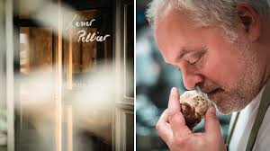

Xavier Pellicer
Xavier Pellicer és un reconegut cuiner català amb una llarga trajectòria en el món de la cuina. Destaca per la seva passió per els productes locals i de proximitat, i pel seu compromís amb una cuina sostenible i respectuosa amb el medi ambient.